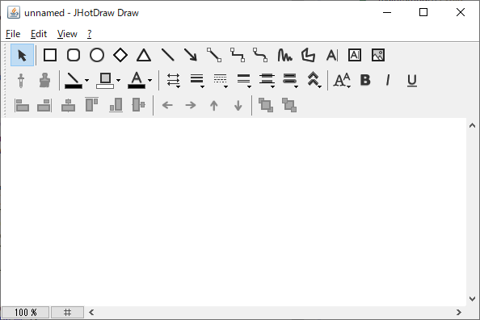
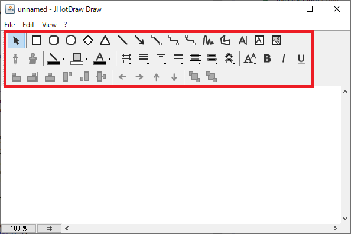
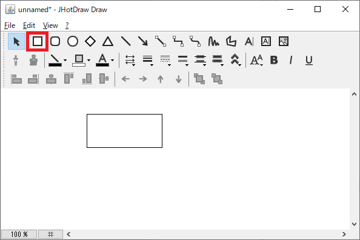

JHotDrawはJavaで書かれたオープンソースの2Dグラフィックスフレームワークです．
JHotDrawを起動すると,まず編集画面が開きます．
編集画面上で行える操作はモードによって異なります．
モードの切り替えは，ツールバーのボタンをクリックすることによって行うことができます．
例えば矩形配置モードでは，編集画面上をクリックすると，クリックした位置に矩形図形を配置することができます（矩形配置機能）．
矩形図形を配置すると選択モードに戻ります．
選択モードでは，編集画面上に配置された図形をクリックすると，その図形を選択状態にすることができます（図形選択機能）．

選択状態の図形はドラッグすることで，移動することができます（図形移動機能）．
 次へ
次へ